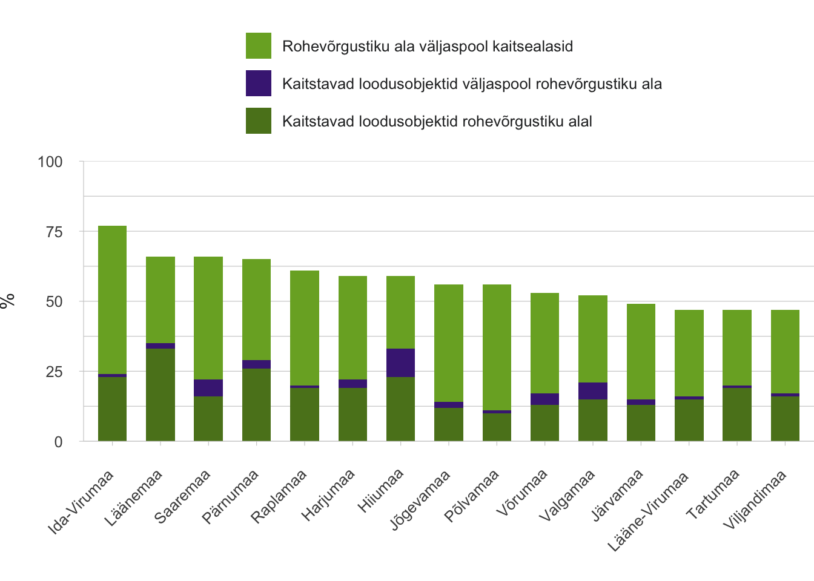

3.3 Loodusalade kujundamine avalikuks kasutuseks
- Rohevõrgustik on tugeva arendussurve all eelkõige linnu ümbritsevates omavalitsustes, mis pärsib võrgustiku sidusat ja igakülgset toimimist ning avaliku kasutuse võimalusi.
Looduskaitsekorraldus ja ruumiline planeerimine loovad eeldused loodusalade säilimiseks ja kasutamiseks.
Artiklis anname ülevaate loodusalade ruumilise planeerimise ja korralduse õiguslikust raamist, mille abil kujundatakse loodusalade ja loodusväärtuste säilimist ning ligipääsu loodusaladele. Selgitame, millistest põhimõtetest lähtutakse, milliste vahenditega loodusalade kaitset ja kasutust hallatakse ning millised on strateegilise ja ruumilise planeerimise eri tasandite seosed loodusväärtuste kaitsel.
Loodusalade terviklikku toimimist ja juurdepääsu korraldatakse Eestis looduskaitse ja ruumilise planeerimise vahenditega. Looduskaitsekorralduse eesmärk on tagada elurikkus, toimivad ökosüsteemid ning kultuurilooliselt ja esteetiliselt väärtusliku looduskeskkonna säilimine. Ruumilise planeerimise ülesandepüstitus on laiem: kavandada maakasutust ühiskonnaelu eri valdkondi ja huve lõimides ja tasakaalustades. Seejuures rõhutab planeerimisseadus ruumilise planeerimise rolli „demokraatliku, pikaajalise, tasakaalustatud“ ja „keskkonnahoidliku ning majanduslikult, kultuuriliselt ja sotsiaalselt jätkusuutliku arengu“ tagamisel. Demokraatia elemendid planeerimisel on maakasutusega seotud huvide ja huvigruppide määratlemine ning ühiskondliku aruteluruumi loomine, et planeerimisprotsessis leppida kokku ruumikasutuse põhimõtetes ja lahendustes. Kaalutlusotsuste puhul saab nii selgitada, kas näiteks piirkonnale eriomaste maastike või rohevõrgustiku säilitamine on olulisem kui erahuvist lähtuv arendustegevus või maavara kaevandamine.
Kogu looduskeskkonda puudutavas planeerimises lähtutakse Eestis keskkonnaseadustiku üldosa seadusest, mis on 2014. aastast keskne põhiseaduse keskkonnakaitselisi sätteid sisustav õigusakt. Asjakohased looduskeskkonna planeerimise põhimõtted (joonis 3.3.1) eeldavad eluvaldkondade lõimitust, huvide tasakaalustatust, keskkonnakahjude vältimist ja keskkonnakaalutluste igakülgset arvestamist ühiskonnaelu korraldamisel.
Joonis 3.3.1. Keskkonnakaitse ja ruumilise planeerimise põhimõtted, põhiõigused ja -kohustused Eesti Vabariigi põhiseaduse, keskkonnaseadustiku üldosa seaduse ning planeerimisseaduse alusel
Allikas: autori joonis.
Loodusalade planeerimisel lähtutakse lähimuspõhimõttest
Ruumiline planeerimine kasvas välja linna- ja regionaalplaneerimisest ning selle termini võtsid kasutusele Euroopa regionaalplaneerimise eest vastutavad ministrid 1983. aastal niinimetatud Torremolinose ehk Euroopa regionaalse/ruumilise planeerimise hartaga. Harta koostamine lähtus soovist tagada hea elukeskkond ja elukvaliteet. Harta sõnastas esmakordselt ruumilise planeerimise põhimõtted, mis kajastuvad ka Eesti planeerimisseaduses. Aastal 2013 kiitis Euroopa Ruumiliste Planeerijate Nõukogu, mille liige on ka Eesti Planeerijate Ühing, heaks Euroopa planeerimise harta (ECTP-CEU 2013). Selles Euroopa ruumilises tulevikuvaates tõstetakse esile ka vajadus tagada ökoloogiline toimimine tehiskeskkonna planeerimisel, igaühe juurdepääs kultuuri- ja looduspärandile ning maastike ja linna rohealade roll elukvaliteedi kujundajana.
Ruumilise planeerimise harta on suunda näitav väärtuspõhine kokkulepe. See käsitleb planeerimist ruumiliste otsustustasandite koostöö- ja koordineerimisvahendina. Iga tasand – alates rahvusvahelisest koostööst säästva arengu saavutamisel kuni kohalike arengu- ja maakasutusplaanideni – peab arvestama vähemalt vahetult ülal- ja allpool paikneva tasandi eesmärkide ja tegevustega. Euroopa Liidus ei ole ühtset planeerimisõigust: ruumilise planeerimise süsteem on hierarhiline ja selle õigusraami seab iga liikmesriik ise. Eestis toimib hierarhilisuse põhimõte praktikas siiski valdavalt ühesuunaliselt: suurema ruumiüksuse strateegilised dokumendid suunavad madalama tasandi ruumiplaneeringute sisu (Irbis Konsultatsioonid jt 2017).
Eestis toimib hierarhilisuse põhimõte valdavalt ühesuunaliselt: suurema ruumiüksuse strateegilised dokumendid suunavad madalama tasandi ruumiplaneeringute sisu.
Teisalt on ruumilisel planeerimisel keskne lähimuspõhimõte: kohalikku elu puudutavad arendusotsused tehakse üldjuhul võimalikult elanikule lähedal ehk madalaimal otstarbekal haldustasandil. Planeeringu väärtus piirkonna tuleviku, elukeskkonna ja avaliku ruumi kujundamisel ning kooskõla kogukonna huvidega sõltub menetleja võimekusest kasutada elanike teadmust ning kaasata neid nii planeeringu koostamisse kui ka täitmisse (Levald 2018; Nuga jt 2015; vt ka Vahtrus jt, käesolev kogumik). Eesti 2017. aasta haldusreform, mis tõi kaasa omavalitsuste arvu ligi kolmekordse vähenemise, oli suunatud just sellise võimekuse suurendamisele piirkonnas. Lisaks on planeerimise kvaliteeti parandanud Eesti ametnike ja ekspertide osalemine täiendõppeprogrammides ja rahvusvahelistes võrgustikes nagu Vision and Strategies Around the Baltic Sea (VASAB) või European Spatial Planning Observation Network (ESPON) (Adams jt 2014).
Eestis jõustati avaliku menetlusena toimuv ruumiline planeerimine 1995. aastal kehtima hakanud planeerimis- ja ehitusseadusega. Alates 2015. aastast vastutab selle eest Rahandusministeeriumi planeeringute osakond. Riigi tasandi ruumiarengut suunavad üleriigiline ja maakonnaplaneering ning neid täpsustavad teemaplaneeringud. Kohaliku tasandi ruumiarengu ja maakasutuse otsused langetab üldplaneeringut ja detailplaneeringut koostades kohalik omavalitsus. Uute, 2015. aasta planeerimisseaduses määratletud planeeringuliikidena eristuvad hierarhilisest süsteemist riigi eriplaneering ja kohaliku omavalitsuse eriplaneering, mille alusel saab olulise ruumilise mõjuga objekti rajamist kavandada väljaspool tavapärast planeerimismenetlust. Eriplaneeringute praktika on Eestis alles välja kujunemas ja nende mõju loodusaladele pole selge.
Avaliku ruumi kujundamise seisukohast on olulisemad planeeringutasandid maakonna- ja üldplaneering. Need arvestavad riigis kehtestatud strateegiliste suundadega, olles samal ajal piisavalt kontekstitundlikud ja kohalikku kogukonda kaasavad. 1999. aastal kõikides maakondades riiklikult algatatud teemaplaneeringut „Asustust ja maakasutust suunavad keskkonnatingimused“ peetakse Eesti asustusstruktuuri kõige enam mõjutanud ruumiliseks planeeringuks, mis tagab rohealade olemasolu ja reguleerib elamuehituse laienemist (Irbis Konsultatsioonid jt 2017, lk 10). Üldplaneering määratleb maakasutuse kohaliku omavalitsuse territooriumil kooskõlas maakonna tasandi planeeringu põhimõtetega. Sealjuures sõnastab üldplaneering puhkealade, avalikult kasutatavate veekogude ning rohevõrgustike, väärtuslike maastike ja looduskoosluste säilimist tagavad kasutustingimused.
Loodusalade seisundit mõjutavad nii rahvusvahelised arengueesmärgid kui ka riiklik valdkonnapoliitika
Eesti on liitunud rahvusvaheliste lepetega, mis toetavad sidusa ja toimiva rohevõrgustiku säilimist ja avalikkuse ligipääsu loodusaladele.
Eesti on liitunud rahvusvaheliste lepetega, mis toetavad sidusa ja toimiva rohevõrgustiku säilimist ja avalikkuse ligipääsu loodusaladele.[c] Looduskaitse ja säästva arenguga seotud ruumilisel ja strateegilisel planeerimisel juhindutakse rahvusvahelistest lepetest (joonis 3.3.2). Varasematest üleilmsetest loodusalade avalikke hüvesid rõhutavatest lepetest on olulisemad 1972. aastast pärinevad kultuuri- ja looduspärandi kaitse konventsioon ning Stockholmi inimkeskkonna kaitse konverentsi deklaratsioon. Aastal 1992 kirjutas iseseisvuse taastanud Eesti Vabariik alla elurikkuse kaitset ja säästvat arengut käsitlevatele lepetele, sealhulgas bioloogilise mitmekesisuse konventsioonile ja ÜRO Agenda 21 tegevuskavale. Rohealade olulisusele elukeskkonnas juhib tähelepanu Maailma Terviseorganisatsiooni keskkonna ja tervise deklaratsioon (2010). Konkreetsemalt käsitleb linna rohealasid, aga ka üldise hea keskkonnaseisundi, elurikkuse ja heaolu tagamist 2015. aastal kokku lepitud ÜRO säästva arengu tegevuskava 2030+. Euroopa tasandil on koostatud mitu loodusalade, maastike, kultuuripärandi ja elukeskkonna kaitsele suunatud konventsiooni, strateegiat või tegevuskava, sealhulgas Euroopa rohetaristu strateegia (2013). Näitena eri väärtuste lõimitusest piirkondade majandamisel väärib märkimist UNESCO programm „Inimene ja biosfäär“, mille raames loodi 1989. aastal Lääne-Eesti saarte biosfääri programmiala.
Joonis 3.3.2. Valik rahvusvahelisi ja Eesti strateegilisi arengudokumente, mis raamistavad loodusalade väärtustamist Eestis
Allikas: autori joonis.
Rahvusvahelised lepped väärtustavad loodusalade fundamentaalset ja mitmekihilist rolli inimeste tervise ning ühiskonna- ja majanduselu jaoks. Bioloogilise mitmekesisuse konventsiooni raames loodud ÜRO globaalse elurikkuse strateegia (2010) eeldab, et riigid on elurikkuse ja selle kaudu loodusalade väärtuste säilimiseks arvestanud elurikkuse väärtustega riiklikes ja kohalikes strateegiates, arengukavades ja ruumilistes planeeringutes hiljemalt aastaks 2020. Eestis vajavad need põhimõtted arendamist, et poliitika ei piirduks loodusalade kui üksnes pärandi või majandusressursi väärtustamisega. Näiteks pikaajalist piirkondlikku arengut suunav Eesti regionaalarengu strateegia (Siseministeerium 2014) märgib probleemina küll valglinnastumisega kaasnevat loodusalade kadu, kuid lahendusena toob esile piirkonnale iseloomulike loodusressursside kasutuse kohalikus ettevõtluses ja kogukondlikus tegevuses. Regionaalarengu strateegia ei anna suuniseid, kuidas piirata arendussurvet loodusaladele, et tagada nende ökoloogiline toimimine, avalik ligipääsetavus ja roll elukvaliteedi hoidmisel. Eesti deklareerib siiski, et on ÜRO globaalse elurikkuse strateegia eesmärke saavutamas, luues hiljemalt 2023. aastaks riikliku süsteemi ökosüsteemi teenuste kaardistamiseks, hindamiseks ja arvestamiseks strateegilises ning ruumilises planeerimises (Linder ja Kakuver 2017).
Lisaks otseselt loodusalasid käsitlevatele dokumentidele mõjutavad loodusalasid teiste eluvaldkondade strateegilised arengudokumendid – eelkõige riigi strateegilisi huve ja valdkondade arengusihte väljendavad poliitika põhialused, valdkondade ja valitsemisala arengukavad ning programmid. Otseselt ruumikasutusega seotud valdkonnad on energeetika, maapõuekasutus, tööstus, põllumajandus, metsandus, looduskaitse, veemajandus, transport, telekommunikatsioon, riigikaitse, turism ja elamualade areng. Füüsilise ruumi piiratuse tingimustes on vajalik saavutada valdkonnapoliitika ja ruumilise planeerimise sisuline ja ruumiline kooskõla (Regionaalarengu strateegia 2014). See tähendab, et ka valdkondlikest arengudokumentidest peaks ilmnema, kuidas aitavad arengusihid kaasa kvaliteetse elukeskkonna ja avaliku ruumi saavutamisele, sealhulgas loodusalade hea seisundi ja juurdepääsu kaudu.
Riigikantselei juures töötanud ruumiloome ekspertrühma (2018) hinnangul aga puudub Eestis seni loodus- ja ehitatud keskkonda koos vaatav ning eri ruumiloome valdkondi siduvalt rakendav ruumipoliitika, mis oleks tegevuse aluseks kõigil otsustustasanditel ja kõigis valdkondades. Kehtiva õiguse kohaselt ei pea valdkondlike strateegiliste arengudokumentide koostamisel ruumiplaneeringutega arvestama, sealhulgas ei käsitleta ega arvestata kaasnevat ruumilist mõju ega eri dokumentide ruumilist koosmõju (Rahandusministeerium 2019). Arengudokumentide kooskõla üleriigilise planeeringuga on mõnikord välja toodud, kuid vaid deklaratiivselt. Aja jooksul on valdkondlikke huve kaitsvate arengudokumentide ruumiline mõju tugevnenud ja kaalutlusõiguse kasutamine planeerimises vähenenud. See on kaasa toonud maakondlike ja kohalike huvide nõrga esindatuse strateegilistes dokumentides (Irbis Konsultatsioonid jt 2017), kusjuures ruumilise planeerimise kaudu ei ole võimalusi valdkondlike arengukavade ruumilise mõjuga regulatsioone muuta (Rahandusministeerium 2019). Sel viisil valdkondlike eesmärkide seadmine toob kaasa juhusliku moega ruumiloome (Ruumiloome ekspertrühm 2018). Mõned Euroopa riigid (Iirimaa, Leedu) on astunud samme ühtse aluse loomiseks ruumiliste arengusuundade, strateegiliste arengudokumentide ja riiklike investeerimisplaanide koostamisel (Rahandusministeerium 2019).
Loodusaladel on erinevad juurdepääsuvõimalused ja kasutuskitsendused
Eesti loodusalade planeerimise alused ning nende õiguslik ja halduslik korraldus on keeruline (joonised 3.3.3 ja 3.3.4). Samal alal võib kehtida korraga mitu kaitsekorda või kasutuskitsendust, näiteks kui ala kuulub samaaegselt maastikukaitseala piiranguvööndisse, kalda veekaitsevööndisse ja rohevõrgustiku tugialasse. Kitsendused puudutavad ka loodusala avalikku kasutamist, sealhulgas alal viibimist.
Joonis 3.3.3. Eesti loodusaladel võib korraga kehtida mitu kaitsekorda sõltuvalt ala loodusväärtustest
Märkus: Ala metsas, kus kitsalt kohastunud, ohustatud, ohualdiste või haruldaste liikide esinemise tõenäosus on suur. Vääriselupaik on erametsas kaitstud vabatahtlikult, riigimetsas Keskkonnaministri käskkirja alusel.*
Allikas: autori joonis.
Eestis on loodusaladele valdavalt vaba juurdepääs ja neid külastavad erinevad huvilised (vt Sepp ja Lõhmus, käesolev kogumik), kuid avalik füüsiline ruum on õigusaktides määratlemata. Euroopa planeerimise harta (2013) näitlikustab seda tänavate, väljakute, jalgradade ja rohevõrgustikuna. Eestis on keskkonnaseadustiku üldosa seadusega esmaselt sätestatud üldise juurdepääsu põhimõte: kuigi maatükil tohib viibida vaid omaniku loal, eeldatakse loa olemasolu, kui omanik ei ole selgelt väljendanud vastupidist. Peale omaniku tohib juurdepääsu loodusalale piirata ka kohalik omavalitsus üldplaneeringuga, kui selleks on ülekaalukas avalik või erahuvi või juhul kui kallasrajal paikneb seaduslik ehitis.
Kõige selgemini on piiritletud avalik juurdepääs ning loodushoid looduskaitseseaduse alusel kaitstavatel objektidel (18,5% Eesti maismaast; Linder ja Kakuver 2017). Kaitsealadel kehtivad eri rangusastmega kaitsevööndid, millest kõige rangema kaitse ja avaliku juurdepääsu keeluga on loodusreservaat (1% kaitsealade maismaapindalast; samas). Sihtkaitse- (60%) ja piiranguvööndisse (39%) kuuluvat maad tohib külastada lähtuvalt kaitse-eeskirjas seatud korrast, kuid igal juhul on seal keelatud telkida, teha lõket ja korraldada üritusi selleks ettevalmistamata ning tähistamata kohtades. Päikesetõusust loojanguni on kaitsealal paiknevad või kaitstava loodusobjekti juurde viivad teed ja rajad kõigile avatud. Ka ranna ja kalda kaitsevööndid (piirangu-, ehituskeelu- ja veekaitsevöönd) on avaliku kasutuse seisukohalt olulised – avalikus kasutuses olevale veekogule peab olema tagatud püsiv juurdepääs, veekogu piiril peab kallasrada läbipääsu võimaldama ja kaitsevööndites tuleb säilitada puhketingimused.
Kallasraja omavolilise sulgemise või kallasrajale pääsemise takistamine on levinud era- ja avaliku huvi põrkumise olukord.
Riigikontroll on toonud oma auditis (2015) välja kallasraja omavolilise sulgemise või kallasrajale pääsemise takistamise kui levinud era- ja avaliku huvi põrkumise olukorra Eestis. Leidub hulgaliselt eraomanikke, kel puudub Riigikontrolli hinnangul tahe oma maal olevaid teid ja parkimiseks sobilikke kohti avalikku kasutusse lubada. Probleemiks võib olla ka veekogudeni viivate juurdepääsuteede raske leitavus ja kehv tähistus või juurdepääsuvõimaluste puudumine sootuks, samuti kallasraja katkemisel ümberpääsu tähistamata jätmine. Riigikontroll tähtsustas kallasraja kasutatavuse tagamisel kohaliku omavalitsuse otsustavust üldplaneeringu koostamisel ja soovitas tõhusamat koostööd Keskkonnainspektsiooniga.
Kõrgendatud avaliku huviga aladeks on 3,5% RMK hallatavaid metsamaid, mis külgnevad puhkemetsade, tiheasustusalade või eramutega või mis on olulised kultuuripärandi seisukohast.
Suur osa Eesti riigi omandis olevate loodusalade haldusest on delegeeritud Riigimetsa Majandamise Keskusele (RMK) ehk eraõiguslikule juriidilisele isikule. Era- ja avalike, riiklike ja kohalike huvide tasakaalustamiseks metsamaa majandamisel on RMK alates 2017. aastast määratlenud kõrgendatud avaliku huviga alad (KAH alad) ning nende majandamisvõtted. Sellisteks aladeks on RMK hallatavad metsamaad, mis külgnevad puhkemetsade, tiheasustusalade või eramutega või mis on olulised kultuuripärandi seisukohast. KAH alade majandamiseks on kogukonnaga kokku lepitud rangemad ja enam konteksti arvestavad põhimõtted. Alade majandamisel tähtsustatakse huvirühmade kaasamist ja maastikuga arvestamist, kuid neid alasid ei jäeta majandamisest välja. 2019. aasta alguseks on RMK teatel kõrgendatud avaliku huviga aladena määratletud 51 134 hektarit metsamaad, mis moodustab 3,5% kogu RMK hallatavast metsamaast.
Joonis 3.3.4. Avalik-õiguslike asutuste ja RMK tööjaotus loodusalade maakasutuse ja kaitse planeerimisel ning korraldusel
Allikas: autori joonis.
Asulates pakuvad elanikele esmast kokkupuudet loodusaladega asulalähedased metsad, linnametsad, pargid ja kalmistud. Linnametsi ja linnalähiseid parkmetsi on Eestis teadlikult majandatud vähemalt 19. sajandi keskpaigast alates: juba toona hinnati kõrgelt metsade puhkeväärtust. Linnasiseste ja linna lähipuhkealade kasutamise üheks olulisemaks näitajaks on nende paiknemise kaugus inimeste elukohast, millest põhjalikumalt räägivad Sepp ja Lõhmus, käesolev kogumik ning Orru jt, käesolev kogumik.
Avaliku juurdepääsu ja kasutatavuse mõttes on eriline loodusala meri. Merealade ajaloolisele kasutusele (kalapüük või liikumistee) on lisandumas uusi kasutusviise, näiteks puhkemajandus või energiatootmine. Merealade rekreatiivne väärtus avaldub ka vaates merele ning uued kasutusviisid võivad avatud merevaate säilimisega konkureerida. Eestis on koostamisel kogu mereala (koos rannaalaga 36 500 km²) hõlmav planeering, mille käigus selgitatakse välja huvid ja eri kasutusotstarveteks sobilikud alad, hinnatakse kasutusviiside koosmõju ning sõlmitakse planeeringuosaliste vahel merekasutuse pikaajaline kokkulepe. Merealade planeerimise praktika on uus kogu Euroopa Liidus (kohustus mereruumi planeerida kehtestati alles 2014. aastal). Enne Eesti merealade planeeringu algatamist jõuti Eestis kehtestada Hiiu- ja Pärnumaa merealade maakonnaplaneering (vastavalt 2016. ja 2017. aastal).
Siseveekogudel paiknevate loodusväärtuste kaitse ja avaliku kasutuse reguleerimine toimub piirkondlike veemajanduskavade ning ruumilise planeerimise kaudu, arvestades loodus- ja tervisekaitse nõuetega. Avalikud supelrannad määratletakse üldplaneeringuga. Veekogudel liikumist haldab laevatavate veekogude puhul Veeteede Amet. Kohalikul omavalitsusel on õigus seada avalikult kasutatavatele veekogudele ajutisi kasutuspiiranguid.
Rohevõrgustik seob loodusalad tervikuks, kuid selle toimimine pole tervikuna tagatud
Kõige ulatuslikum kaitse loodusalade maakasutusmuutuste eest on seotud rohevõrgustikuga, mis hõlmab 55% Eesti maismaast.
Kõige ulatuslikum kaitse loodusalade maakasutusmuutuste eest on seotud rohevõrgustikuga, mis hõlmab 55% Eesti maismaast. Selle eesmärk on sidusalt ühendada eri tüüpi looduslikke või looduslähedasi maa- ja veealasid, et tagada nende ökoloogiline toimimine ning maastike säilimine. Rohevõrgustik koosneb eri tähtsusega (riiklik, maakondlik, kohalik) tugialadest ja neid ühendavatest rohekoridoridest. Eesti kaitsealusest maast kuulub rohevõrgustikku 88%, mis omakorda moodustab umbes kolmandiku rohevõrgu kogupindalast. Kõige enam kattuvad kaitstavad alad ja rohevõrgustik Läänemaal (51% rohevõrgustikust kaitse all), kõige vähem aga Põlvamaal (18%). Väljaspool rohevõrgustikku on kõige enam alasid looduskaitse all Hiiu- (29%), Valga- (28%) ja Saaremaal (27%) (joonis 3.3.5).
Joonis 3.3.5. Rohevõrgustiku ja kaitstavate loodusobjektide (kaitsealad, kaitstavate liikide leiukohad, püsielupaigad, Natura 2000 alad) osakaal maakonna kogupindalast

Allikas: Kutsar jt (2018).
Rohevõrgustiku vajaduse sätestab rahvusvaheliselt Euroopa Liidu rohetaristu strateegia ja riiklikult Eesti looduskaitse arengukava. Võrgustikku kuuluvad alad määratakse maakonna- ja üldplaneeringuga. Rohevõrgustiku planeerimisel on abiks rohevõrgustiku planeerimisjuhend (Kutsar jt 2018) ja Rahandusministeeriumi 2018. aasta juhend „Nõuandeid üldplaneeringu koostamiseks“. Idee ise ulatub Eestis tagasi 1960. aastatesse, mil Jaan Eilart ja Vaike Parker tegid esimesed katsetused puhkemaastike ja rohekoridoride planeerimisel Tartu ümbruses ning Heino Luik ja Veljo Ranniku tegelesid põlevkivi tootmisalade funktsionaalse tsoneerimisega Ida-Virumaal. 1980. aastate alguses arendati teadustöös uuenduslikku käsitlust ökovõrgustikest kui maastikul inimmõju ökoloogiliselt kompenseerivatest aladest (Mander jt 2018). Erineva täpsusastmega ökovõrgustike kaarte koostati kuni 1980. aastate lõpuni, neist täpseimad loodi Tallinna, Kirde-Eesti ning Saare- ja Hiiumaa kohta. „Roheline võrgustik“ võeti terminina kasutusele 2000. aastal kehtestatud üleriigilises planeeringus Eesti 2010+. Praegu käsitleb planeerimisseadus rohevõrgustikke koos väärtuslike maastike, põllumajandusmaade ja miljööaladega, viidates muu hulgas nende alade omavahelisele seosele ja rohevõrgustiku kultuurilisele tähtsusele.
Eestis puudub konsensus ja ühene kohtupraktika küsimuses, kas arendusplaani vastuolu planeeringuga annab aluse tegevusloa väljastamisest keeldumiseks või mitte.
Rohevõrgustikku kuuluvate, kuid kaitsealadest välja jäävate loodusalade säilimist ja juurdepääsu tagab maakonna- ja üldplaneeringute nõue mitte muuta selliste alade maakasutuse peamist otstarvet (nt asendada loodusala tehisalaga, nagu maardla või elamualaga, mis ühtlasi välistab avaliku kasutuse). Kitsendusi seatakse ka maakasutuse korraldamisel ja tegevuslubade väljastamisel, sealhulgas ehitusõiguse andmisel. Siiski saab planeeringut muutes jätta võrgustikust välja arendussurve all olevaid või maardlatel paiknevaid loodusväärtuslikke alasid, mis ei kuulu kaitsealade koosseisu. Arendussurve rohevõrgustikule on olnud viimasel aastakümnel märkimisväärne just suuremate tõmbekeskuste (Tallinna ja Tartu) rõngasvaldades.
Rohevõrgustiku toimimist ohustavate arendusplaanide puhul analüüsitakse mõju ulatust ja tegevuse lubatavust keskkonnamõju hindamise käigus, kuid arenduspõhise hindamise puudus on kuhjuvate ja hajusate ruumiliste mõjude piiratud käsitlus. Maakonna- ja üldplaneeringud on küll koostatud laia strateegilise vaate alusel, kuid Eestis puudub konsensus ja ühene kohtupraktika küsimuses, kas arendusplaani vastuolu planeeringuga annab aluse tegevusloa väljastamisest keeldumiseks või mitte (Kask jt 2015). Seetõttu on planeerimismenetlus loodusväärtusliku avaliku ruumi kaitsel küll oluline, kuid mitte alati piisav vahend ning võtmetähtsusega aladel tuleks kaaluda tugevamaid kaitsemeetmeid.
Rohevõrgustiku analüüs näitab planeerimise puudujääke ja õigusraamistiku vajakajäämist
Looduskaitse arengukava raames analüüsiti Eesti maakonna- ja üldplaneeringutes määratletud rohevõrgustiku toimimist aastatel 2003–2017 (Kutsar jt 2018). Andmepäringule vastasid tähtajaks 14 maavalitsust 15st ja 133 kohalikku omavalitsust 213st. Analüüsiks sobilikud ruumiandmed (vektorfailid) saadi 15 maakonna- ja 74 üldplaneeringu kohta.
Rohkem kui pooltes planeeringutes esines suuri kõrvalekaldeid rohevõrgustiku määratlemise metoodikast. Tugialad ja rohekoridorid olid valdavalt eristamata (11 maakonna- ja 43 üldplaneeringus), nagu ka riikliku või maakondliku tähtsusega ja kohaliku tähtsusega tugialad. Selle tulemusena ei ole võrgustiku elemendid enamikus planeeringutes eristatavad ja seletuskirjas seatud kasutustingimused ei seostu üheselt aladega kaardil. Seega ei saa majandamisotsuseid alapõhiselt kaaluda ning kaob tugialadele ja rohekoridoridele erinevate tingimuste sätestamise mõte. Harjumaa näitel analüüsiti rohevõrgustiku muutumist CORINE 2006., 2012. ja 2018. aasta maakattetüüpide tasemel. Ajavahemikul 2006–2012 teisenes Harjumaa rohevõrgustikus kokku 12 010 hektarit maad, mille seas valdas loodusliku maakatte klasside teisenemine. Umbes 300 hektaril muudeti loodusliku maakattega ala tehisalaks, enamasti elamuarenduseks ja karjäärideks. Rohekoridoride katkestusi (mingi osa koridori looduslikust maakattest muutus tehisalaks) oli näiteks Tallinna ümbruses ja põhimaanteede ääres kokku 25 (joonis 3.3.6). Ajavahemikul 2012–2018 teisenes rohevõrgustikus kokku 10 509 hektarit maad, sealhulgas muudeti 224 hektarit loodusliku maakattega ala tehisalaks. Nende muutustega eemaldati seni rohevõrgustikku kuuluvad alad avalikust kasutusest ning kadus neile planeeringuga seatud loodusala funktsioon.
Analüüsist järeldati, et Eesti õigusraamistik on rohevõrgustiku kaitse tagamiseks piisav siis, kui õigusakte rakendatakse sihiga säilitada rohevõrgustikku. Arendussurve toob kaasa rohevõrgustiku killustumise. Piirkondades, kus rahvastik kahaneb ja arendussurve on väiksem, säilib võrgustiku kvaliteet ja juurdepääsetavus. Rohevõrgustike säilimist ja igakülgset toimimist aitab tagada planeerimismenetluse tehnilise taseme tõstmine, sealhulgas rohevõrgustiku sihttasemete määratlus, ruumiinfo digistandardite kasutus ja planeerimislahenduse sidumine avalike andmekogudega.
Joonis 3.3.6. Harju maakonna rohevõrgustiku rohekoridoride katkestused (punased ringid) 2006. ja 2012. aasta võrdluses
Allikas: Kutsar jt 2018.
Kokkuvõte
Arendussurve toob kaasa rohevõrgustiku killustumise. Piirkondades, kus rahvastik kahaneb ja arendussurve on väiksem, säilib võrgustiku kvaliteet ja juurdepääsetavus.
Eestis kehtivad ruumilise planeerimise ja looduskaitse nõuded, mis toetavad loodusalade säilimist, nende head seisundit ja avalikku juurdepääsu. Üle poole Eesti maismaast kuulub rohevõrgustikku, mis on kokku lepitud ruumilise planeerimise protsessis. Sama ajal on kaitstavaid maa-alasid Eestis proportsionaalselt vähem kui teistes Euroopa riikides (vastavalt 20% ja 26%; European Environmental Agency 2019). Praegustest ruumilise planeerimise ja looduskaitse meetmetest ei piisa, et tagada hea elukeskkond, avatud ruum ja loodusalade hüvede säilimine. Selle põhjusteks on eri valdkondi katva läbimõeldud ruumipoliitika puudumine ja õiguslik võimalus mitte lähtuda strateegiliste arengudokumentide koostamisel ning arendusplaanide menetlemisel planeeringus kokku lepitud tingimustest ja ruumilise koosmõju analüüsist. Nende kitsaskohtade lahendamise kõrval on sidusa ruumipoliitika elluviimisel oluline ka planeeringute tehnilise taseme tõus ja digiajastu normidele vastav info kättesaadavus.
Viidatud allikad
Adams, N., Cotella, G., Nunes, R. 2014. The engagement of territorial knowledge communities with European spatial planning and the territorial cohesion debate: a Baltic perspective. – European Planning Studies, 22 (4), 712–734.
ECTP-CEU 2013. Euroopa planeerimise harta: visioon Euroopa linnade ja piirkondade jaoks 21. sajandil. Barcelona: Euroopa Ruumiliste Planeerijate Nõukogu.
European Environmental Agency 2019. Share of country designated as terrestrial protected area and the overlap between Natura 2000 or Emerald sites and national designations. https://www.eea.europa.eu/ds_resolveuid/13e289d0367a4cf2b4ddfb7aac31efee.
Irbis Konsultatsioonid OÜ, Tartu Ülikooli Sotsiaalteaduslike rakendusuuringute keskus, Hendrikson & Ko OÜ 2017. Arengu ruumiline ja strateegiline kavandamine, sh regionaaltasandi funktsioonid ruumilise arengu suunamisel. Aruanne Rahandusministeeriumile. Tartu–Tallinn. https://planeerimine.ee/static/sites/2/arengu-ruumiline-ja-strateegiline-kavandamine-1.pdf.
Kask, O., Lopman, E., Relve, K., Kuusk, P., Triipan, M., Vaarmari, K., Vahtrus, S., Veinla, H., 2015. Keskkonnaseadustiku üldosa seaduse kommentaarid. Tartu: Keskkonnaõiguse Keskus.
Kutsar, R., Metspalu, P., Eschbaum, K., Vahtrus, S., Sepp, K. 2018. Rohevõrgustiku planeerimisjuhend. Tallinn–Tartu: Keskkonnaagentuur, Hendrikson & Ko OÜ.
Levald, A. 2018. Kohandav planeerimine ja ruumiloome kahaneva rahvastikuga piirkondades. – Ettekanne Riigikogu probleemkomisjoni istungil Toompeal 3.12.2018. Tallinn: Rahandusministeerium.
Linder, M., Kakuver, K. (toim.) 2017. Looduskaitse. Eesti looduse kaitse aastal 2015. Eesti looduse mitmekesisus 5. Tallinn: Keskkonnaagentuur.
Mander, Ü., Kull, A., Uuemaa, E., Mõisja, K., Külvik, M., Kikas, T., Raet, J., Tournebize, J., Sepp, K. 2018. Green and brown infrastructures support a landscape-level implementation of ecological engineering. – Ecological Engineering, 120, 23–35.
Nuga, M., Metspalu, P., Org, A., Leetmaa, K. 2015. Planning post-summurbia: from spontaneous pragmatism to collaborative planning? Moravian Geographical Reports, 23 (4), 36−46. <p id=“Rahandusministeerium2019”>Rahandusministeerium 2019. Ruumilise planeerimise rohelise raamatu eelnõu 26.07.2019. https://planeerimine.ee/prr.
Riigikontroll 2015. Kallasradade kasutamine. Kas omavalitsused ja Keskkonnainspektsioon on teinud kõik endast sõltuva, et inimene pääseks randa ja saaks kallasrajal liikuda? Riigikontrolli aruanne Riigikogule. Tallinn, 8. detsember 2015.
Märkus: Toonitud põhjal ruumiplaneeringute liigid, mis muu hulgas käsitlevad loodusalade kasutuse eesmärgipärasust ja kaitset. Joonis ei hõlma Euroopa Liidu direktiive, Eesti seadusi ega teiste valdkondade strateegilisi arengudokumente, mis võivad samuti mõjutada loodusalade avalikku kasutust.